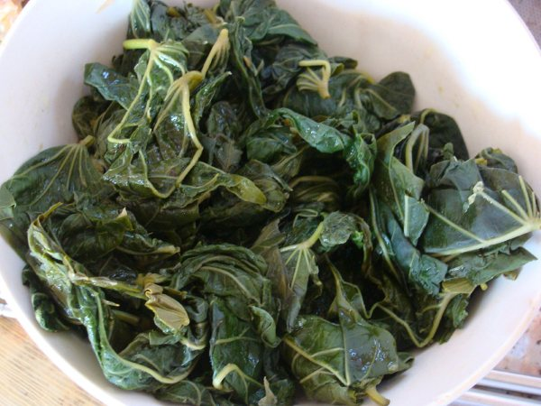

回家过中秋，在招远转了转，拍了几张照片，感觉还不错，呵呵
2014年从msn space存档中重新恢复出来！
另外， 各位看官吃过这东西没？哈

Comments xl33 liu - 10/10/2009 8:54:55 PM 没想到你回家过节了，呵呵。这是什么好吃的啊？没见过······ Wang Darren - 10/12/2009 7:37:11 PM 哈哈， 小丽居然都不认识这个东西？ 辰 毕 - 10/12/2009 10:56:17 PM 这一定是菜 波 - 10/13/2009 9:45:42 AM 是芹me菜么 天连 曲 - 10/13/2009 11:15:19 AM 野菜？？ Wang Darren - 10/17/2009 2:04:53 PM hehe, 我就随口提了这么一句，居然这么些人关注啊， 其实也不是啥上得了台面的东西，“地瓜叶子”，我只是回老家就愿意让老妈给弄点儿吃，忆苦思甜一下，呵呵 xl33 liu - 10/22/2009 11:07:27 PM 真是地瓜叶子啊，看了像，还真没敢往那上面猜。 不过我现在倒是挺馋地瓜梗的，呵呵。 qiuying wang - 10/23/2009 1:12:17 PM 第一次见，地瓜叶水煮就可以吃？ 我老妈，种了一种菜，叫做“番薯空心菜”，好像是，地瓜叶和空心菜的杂交，哈哈，那个菜，爆炒可相当好吃呢